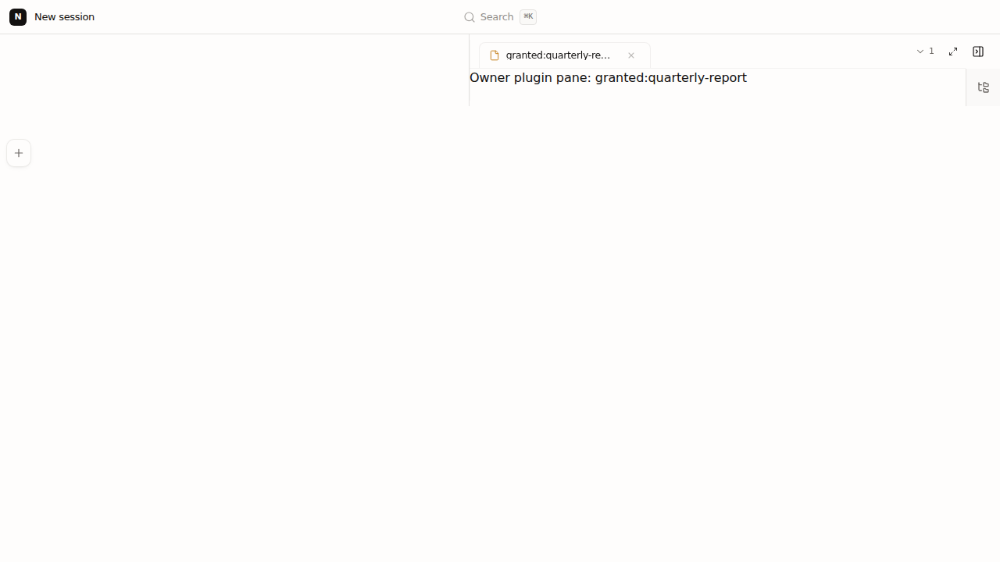

Bead factory-plugin-owner-runtime-identity-prefix-8pdn.2. Proof-only change; no production gap was demonstrated.
Server plugin → injected instance bridge → UiBridge.postCommand → authenticated prefixed polling → WorkspaceAgentFront dispatcher → app plugin surface resolver → pane, exactly once.
Playwright: 1/1 in 32.3s. Ask-user: 193 passed. Existing bridge smoke: 11/11.

Review and approve the proof-only PR; do not merge until parent authorization.